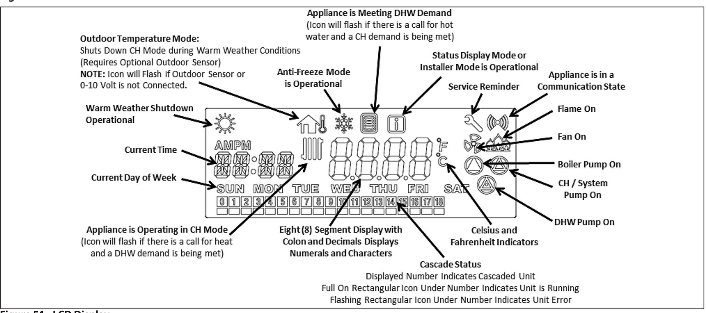
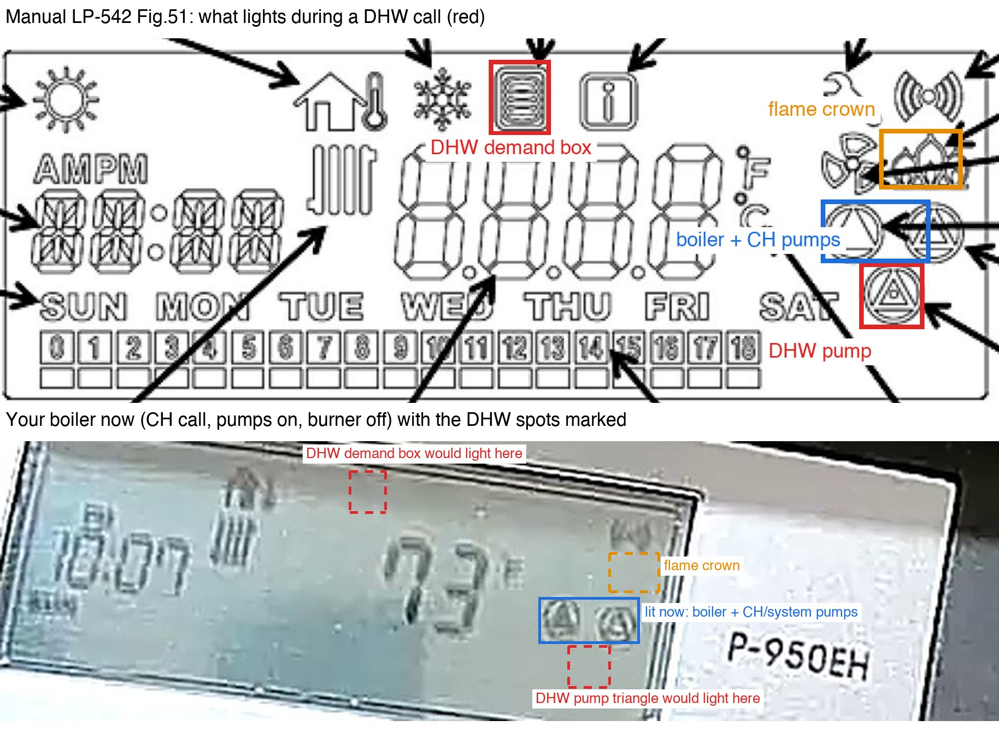
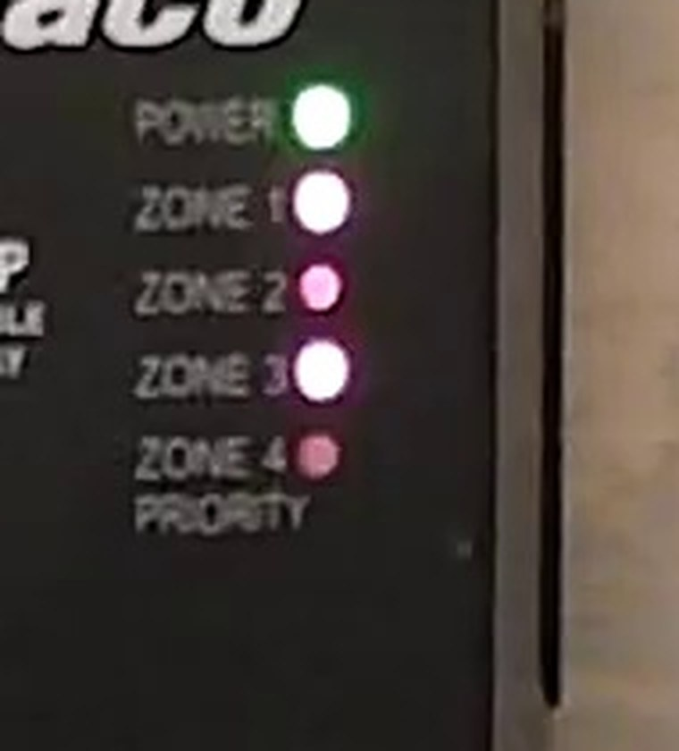

The boiler camera looks at the controller's LCD. Every icon on it is defined by the manufacturer in manual LP-542, Figure 51 (page 48). The monitor sends this annotated drawing to the vision model alongside each capture, so the model identifies segments from the legend rather than guessing.


| Where | Icon | Means | Reading field |
|---|---|---|---|
| Top row, far left | Sun | Warm-weather shutdown is active (needs the optional outdoor sensor). | sun_icon |
| Top row | House with thermometer | Outdoor-temperature mode. It flashes when no outdoor sensor is connected, which is this boiler's normal state, so it carries no demand information. | house_icon |
| Top row | Snowflake | Anti-freeze protection is running. | snowflake_icon |
| Top row, centre | Small box with horizontal lines | Appliance is meeting a DHW (hot water) demand. The only hot-water indicator on this model. Flashes if a heating call is also waiting. | dhw_icon → mode dhw |
| Top row | [i] | Status display mode or installer mode is open. | info_icon |
| Top row, right | Wrench | Service reminder. | wrench_icon |
| Top row, far right | ((o)) | The control is communicating with another device (cascade, BMS). Status only. | comm_icon |
| Left of the big number | Radiator (vertical fins) | Appliance is operating in CH (central heating) mode. Flashes if a hot-water call is also waiting. | ch_icon → mode heating |
| Centre | Big number + F/C | Boiler water temperature. During a fault it shows the error code instead (for example E04, Er:76). | temperature, error_codes |
| Left | hh:mm AM/PM and SUN…SAT | The control's own clock and day. | time_text, day_text |
| Right, under F/C | Crown of flames | The burner is firing. The only true flame indicator; it can be off during a heating or DHW call while the boiler cycles. | flame_on |
| Right | Fan | Combustion fan running (pre-purge, firing, post-purge). | fan_on |
| Right, two side by side | Triangle-in-circle ×2 | Left = boiler pump, right = CH/system pump. These two are what is usually lit during a heating call. | boiler_pump, ch_pump |
| Right, alone below those | Triangle-in-circle ×1 | DHW pump (the indirect tank's pump). | dhw_pump |
| Bottom row | Boxes 0–18 | Cascade status. Blank on a single boiler. | cascade_text |
| Icon | Heating call | DHW call | Idle |
|---|---|---|---|
| Radiator (left of number) | on | off, or flashing if a heat call waits | off |
| DHW box (top row) | off | on, or flashing if a heat call waits | off |
| Boiler pump | on | usually on | off after run-on |
| CH/system pump | on | off (installer parameter 40:BP can keep it on) | off after run-on |
| DHW pump (lower) | off | on | off after run-on |
| Flame crown | on only while firing | on only while firing | off |
| Temperature | climbs toward the CH set-point (130–180°F) | climbs toward the DHW boiler target, usually higher | drifts down |
| ((o)) | on | on | on |
The pump columns depend on installer settings for pump run-on and boiler-pump mode. "Mode" on the dashboard is derived deterministically: DHW box lit → dhw; else radiator lit → heating; else idle. The flame is tracked separately because a call can be active between burner cycles.

The zone camera watches the relay panel's five LEDs. Top to bottom: POWER, ZONE 1, ZONE 2, ZONE 3, ZONE 4 / PRIORITY. A zone LED is on when that thermostat is calling for heat and the relay has closed.
Light bleeds between neighbouring LEDs, so colour alone is misleading. A lit LED has a blown-out white core; an unlit one is at most a dim coloured dot.
Every 15 minutes the monitor signs in to the ecobee account the way the ecobee web app does (no developer API key is needed) and reads each thermostat: indoor temperature, the heat set-point, whether it is calling for heat (any heating equipment listed in the thermostat's equipment status), the fan, the active comfort setting or hold, humidity, and each remote sensor.
ecobee_token.enc); the key lives only in a GitHub secret. The password is never stored.Every local still (15 boiler frames: 8 heating calls, 2 idle, 5 where the camera was framed on pipes; 10 zone frames) was re-read by three models with the production prompt and legend image. Ground truth was set by eye from the enlarged crops.
| Model | Mode | Temperature | Pumps | Off-target frames flagged unreadable | False positives | Zone LEDs vs pixel method | Cost per boiler read |
|---|---|---|---|---|---|---|---|
| Claude Sonnet 5.5 | 10/10 | 10/10 | 10/10 | 5/5 | none | 8/10 (twice called a dark Zone 1 lit) | $0.009 |
| Claude Opus 5.5 (default) | 9/10 | 10/10 | 10/10 | 5/5 | 1 DHW (house icon misread on a blurry frame, self-rated low confidence) | 10/10 | $0.018 |
| Claude Haiku 5.5 | 7/10 | 10/10 | 3/10 | 5/5 | none | 10/10 | $0.0005 |
No frame in the set showed a DHW call or the burner firing, so those states are unverified for every model. Because the one Opus miss was self-rated low confidence, the monitor runs Sonnet 5.5 as the primary and re-reads a frame on Opus 5.5 at medium effort whenever it shows an error code, is unreadable, or is low-confidence and would change the state (flame, DHW, heating, or a 15°F jump) compared with the previous reading. The zone fallback is pinned to Opus. The Model column in the readings table shows which model produced each row and when a confirmation ran.